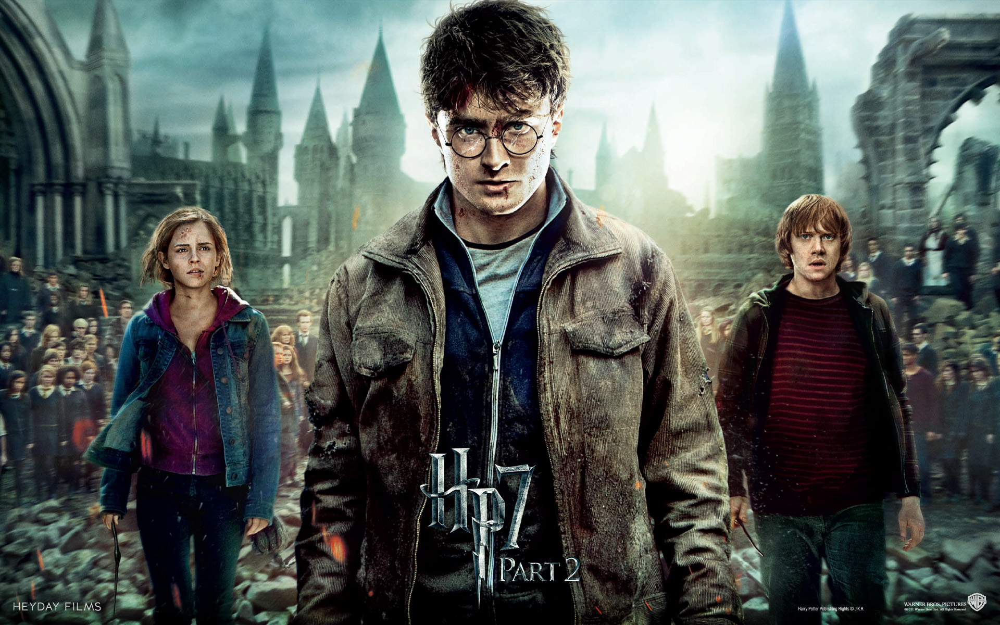

Harry Potter: Las Reliquias de La Muerte 292% de coincidencia 2 h 49 minEl enfrentamiento entre el bien y el mal llega a su cénit cuando el joven Harry, Ron y Hermione se preparan para una última batalla contra Lord Voldemort. Los amigos tienen que buscar los horrocruces que mantienen inmortal al mago.REPRODUCIRTRAILERProtagonistas: Emma Watson, Daniel Radclife, Eddie Redmay. Genero: Fantasia.
 REPRODUCIR
TRAILER
REPRODUCIR
TRAILER